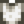

Oil
| Oil | |||||
| All purpose cooking oil. | |||||
| Information | |||||
| Source | Artisan Goods • Pierre's | ||||
| Energy / Health |
|
||||
| Sell Price | |||||
| Artisan Goods | |||||
| Equipment | |||||
| Processing Time | |||||
| Ingredients | |||||
Oil is a cooking ingredient made from the Oil Maker. It can also be obtained from Pierre's General Store for  200g. 2-4 Oil may occasionally be found in Supply Crates on the Beach Farm provided the player has upgraded the Farmhouse at least once.
200g. 2-4 Oil may occasionally be found in Supply Crates on the Beach Farm provided the player has upgraded the Farmhouse at least once.
Oil is given no quality rating, so its sell price doesn't benefit from quality increases. It also does not benefit from the Artisan Profession. Its main benefit lies in its use as a cooking ingredient. Oil made from base quality sunflowers, grown sunflower seeds, and gold or lower qualities of corn is profitable, though corn is more profitable in the Keg, Preserves Jar, or Seed Maker.
Processing Times
Note: From 2am to 6am, machines process at 100 minutes per hour. For the rest of the day, machines process at 60 minutes per hour.
| Ingredient | Time |
|---|---|
(14h overnight) | |
Recipes
| Image | Name | Description | Ingredients | Energy / Health | Buff(s) | Buff Duration | Recipe Source(s) | Sell Price | |||
|---|---|---|---|---|---|---|---|---|---|---|---|
| Bruschetta | Roasted tomatoes on a crisp white bread. | 50 |
N/A | N/A |
|
||||||
| Crab Cakes | Crab, bread crumbs, and egg formed into patties then fried to a golden brown. | 101 |
|
||||||||
| Crispy Bass | Wow, the breading is perfect. | 40 |
|
||||||||
| Fiddlehead Risotto | A creamy rice dish served with sauteed fern heads. It's a little bland. | 101 |
N/A | N/A |
|
||||||
| Fried Calamari | It's so chewy. | 36 |
N/A | N/A |
|
||||||
| Fried Eel | Greasy but flavorful. | 33 |
|
||||||||
| Fried Mushroom | Earthy and aromatic. | 60 |
|
||||||||
| Hashbrowns | Crispy and golden-brown! | 40 |
|
||||||||
| Oil of Garlic | Drink this and weaker monsters will avoid you. | 89 |
Oil of Garlic Buff | ||||||||
| Radish Salad | The radishes are so crisp! | 90 |
N/A | N/A |
|
||||||
| Stir Fry | Julienned vegetables on a bed of rice. | 90 |
N/A | N/A |
|
Gifting
| Villager Reactions
| |
|---|---|
| Dislike | |
| Hate | |
Tailoring
Oil is used in the spool of the Sewing Machine to create the Oil Stained Shirt.  It can be used in dyeing, serving as a yellow dye at the dye pots, located in Emily's and Haley's house, 2 Willow Lane.
Quests
Oil is not used in any quests.
History
- 1.4: Tooltip display no longer shows "Artisan Good". Can now be used in Tailoring.
- 1.5: Can now be found in Supply Crates on the Beach Farm.
| Artisan Goods | |
|---|---|
| Bee House | Honey |
| Cask | Beer • Cheese • Goat Cheese • Mead • Pale Ale • Wine |
| Cheese Press | Cheese • Goat Cheese |
| Keg | Beer • Coffee • Green Tea • Juice • Mead • Pale Ale • Wine |
| Loom | Cloth |
| Mayonnaise Machine | Dinosaur Mayonnaise • Duck Mayonnaise • Mayonnaise • Void Mayonnaise |
| Oil Maker | Oil • Truffle Oil |
| Preserves Jar | Aged Roe • Caviar • Jellies and Pickles |
| Fish Smoker | Smoked Fish |
| Dehydrator | Dried Mushrooms • Dried Fruit • Raisins |
| Misc | Maple Syrup • Oak Resin • Pine Tar • Mystic Syrup |
| Ingredients | |
|---|---|
| Ingredients | Wheat Flour • Sugar • Rice • Oil • Vinegar |